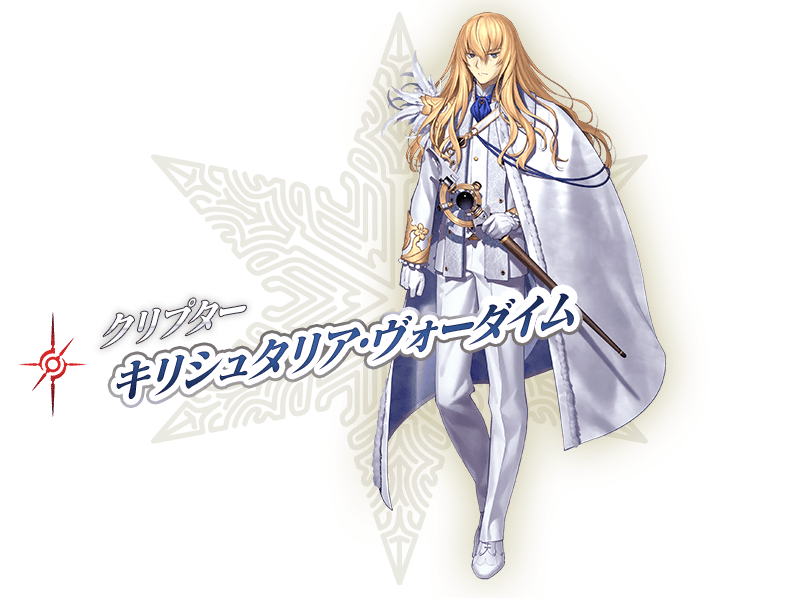
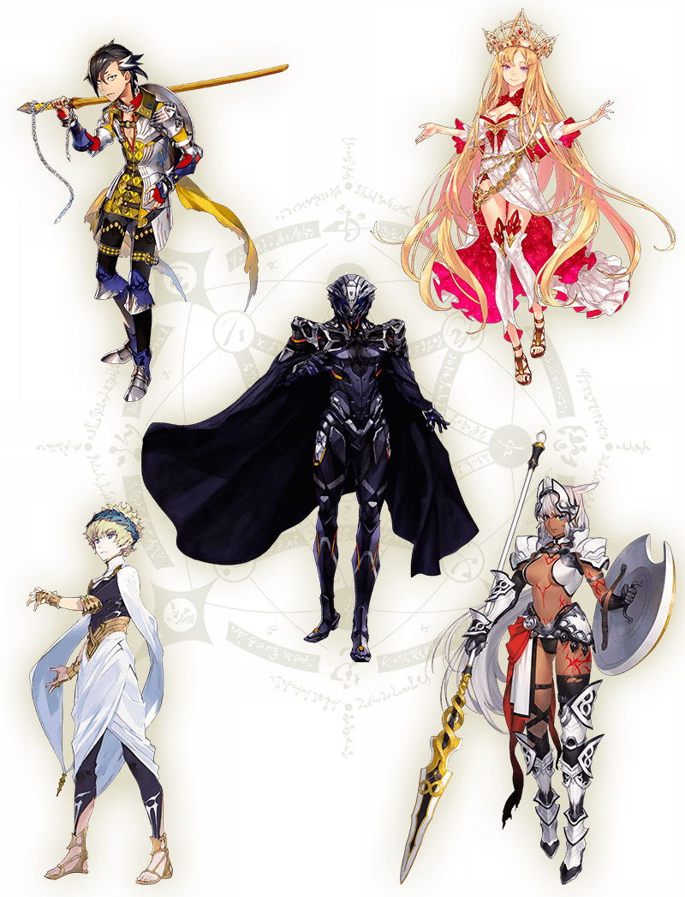

- 8/4
- 第2部 第5章「Lostbelt No.5 神代巨神海洋 亞特蘭提斯」的情報公開！

公開一部份第2部 第5章「Lostbelt No.5 神代巨神海洋 亞特蘭提斯」的情報。
第5個異聞帯は預定冬季開幕！
另外，「Fate/Grand Order」官方網站內的公告中，公開了最新情報影片，敬請確認。
◆開放條件◆
通過第2部 第4章「Lostbelt No.4 創世滅亡輪廻 宇迦淨土 黑色最終之神」後開放。
※不需要通過亞種特異點(從Ⅰ到Ⅳ)。
※本頁面皆為開發中圖片。會有與實際圖片相異的情況。


介紹在第2部 第5章「Lostbelt No.5 神代巨神海洋 亞特蘭提斯」登場的代表性5位從者插圖！
